Work / Autonomous Robotic Design for Strategic Adversarial Games
Autonomous Robotic Design for Strategic Adversarial Games
Skills Mechanical design, Design under constraints, Onshape, SolidWorks, Python, C++, ROS 2, Nav2, BehaviorTree.CPP, RViz, Gazebo, Jetson, OpenCV, YOLO, PyTorch, Blender, PPO
Try it live
On this page
More than 10,000 high school teams play VEX every year, all with robots driven by people. Our goal was to build one that plays the same game against a human using only what it can sense and compute on board. That means it has to see the field, know where it is, track the other robot and decide what to do next, all in real time.
The game was Push Back: a 12 by 12 foot field with 88 blocks in two colours, scored into tube-shaped goals at different heights. VEX U rules allowed this robot a 15 inch cube at the start, and only VEX's own motors.
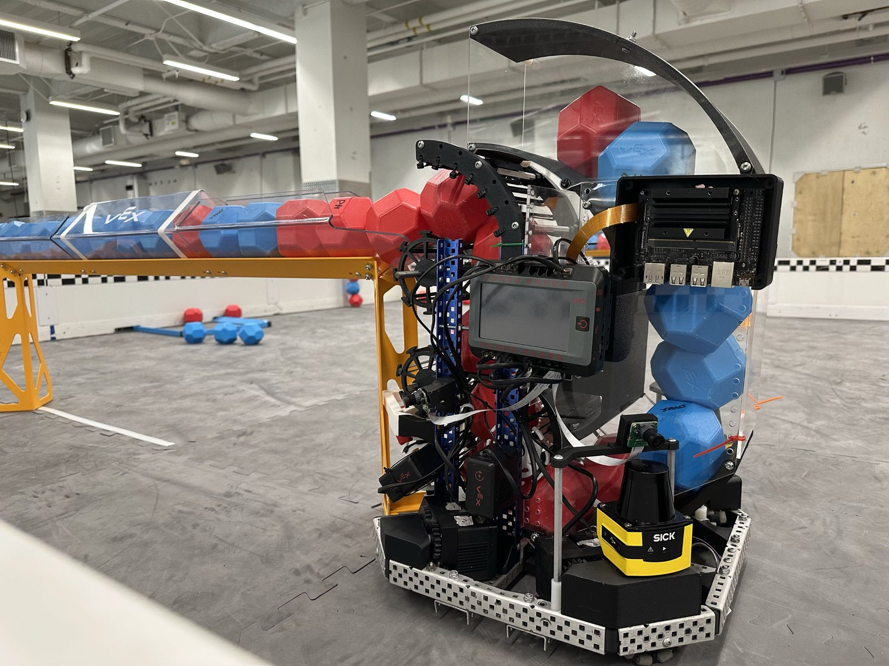
The robot
The base is an X-drive: four omni wheels at 45 degrees, so the robot can move in any direction without turning first. A column of rubber-band rollers pulls blocks in, carries them up and scores them at three heights. A colour sensor in the intake spots the other team's blocks and throws them out halfway up the column. The first hopper design was an open basket, and it jammed. We replaced it with a single-file magazine that holds 10 blocks and stopped jamming.
I designed and built the whole robot. The hard part was fitting everything inside that 15 inch cube: five cameras, two SICK LiDARs, two Jetsons, the batteries, an IMU and the colour sensor, with the intake and scoring column running through the middle five inches and every sensor still getting a clear view of the field.
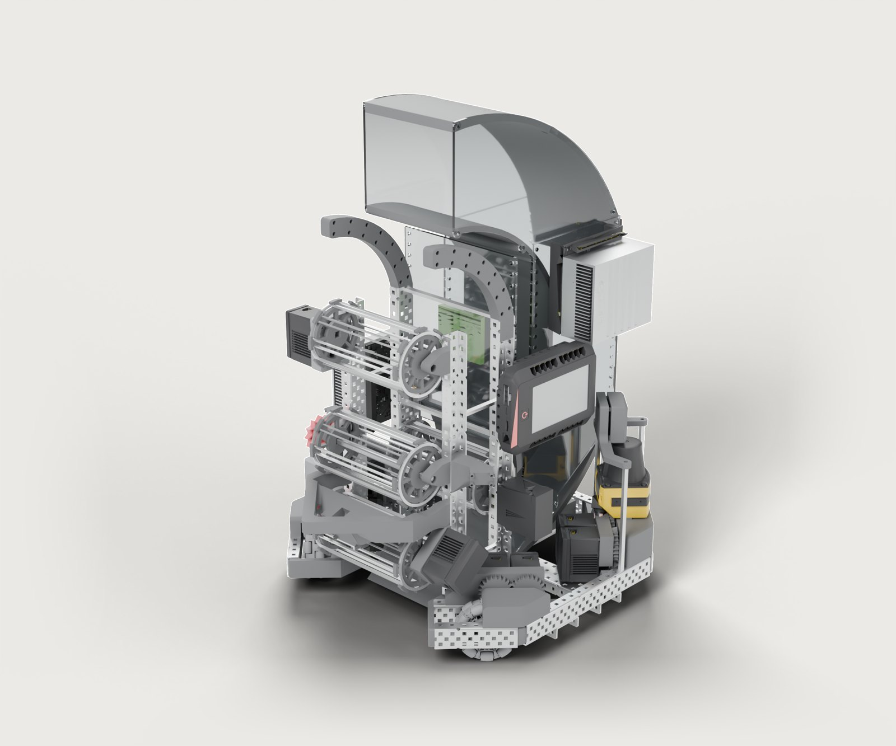
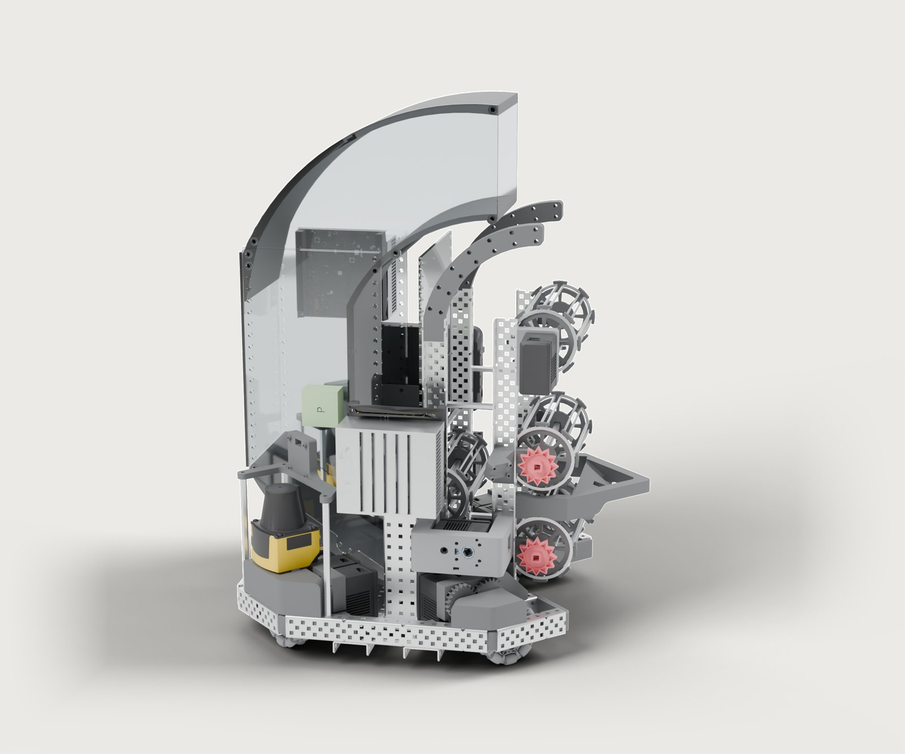
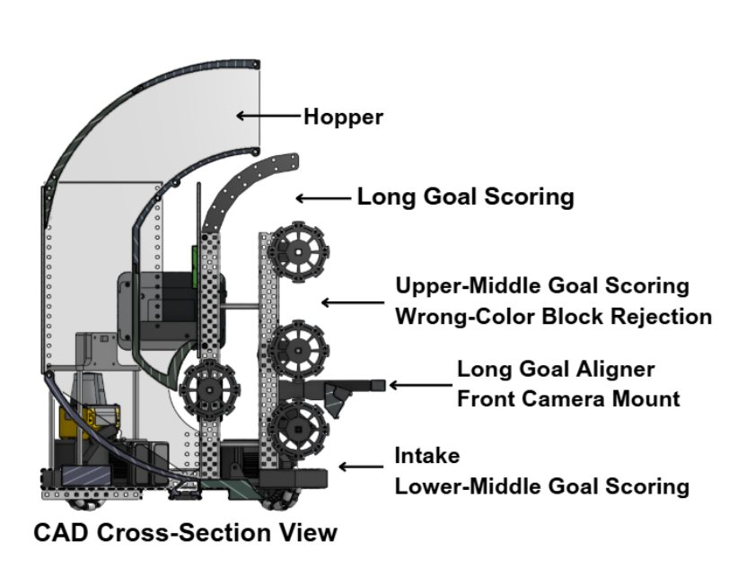
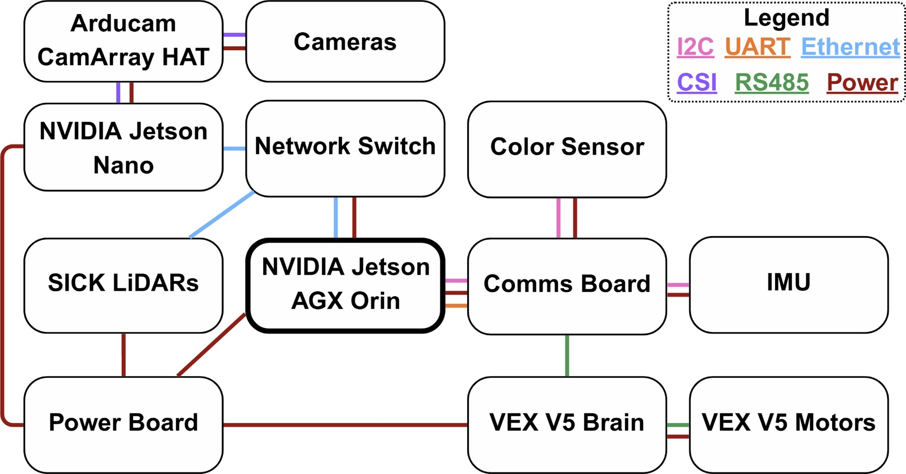
Electronics
The main computer is a Jetson AGX Orin. The LiDARs connect over Ethernet, and everything else goes through a custom Comms Board that talks to the VEX V5 Brain over RS-485, sending velocities for seven motors at 100 Hz and reading encoder data back. A separate Power Board, rated for 200 W, has a fuel gauge to track the battery. The team wrote ROS 2 drivers for the IMU and the fuel gauge, and fixed bugs in the colour sensor driver.
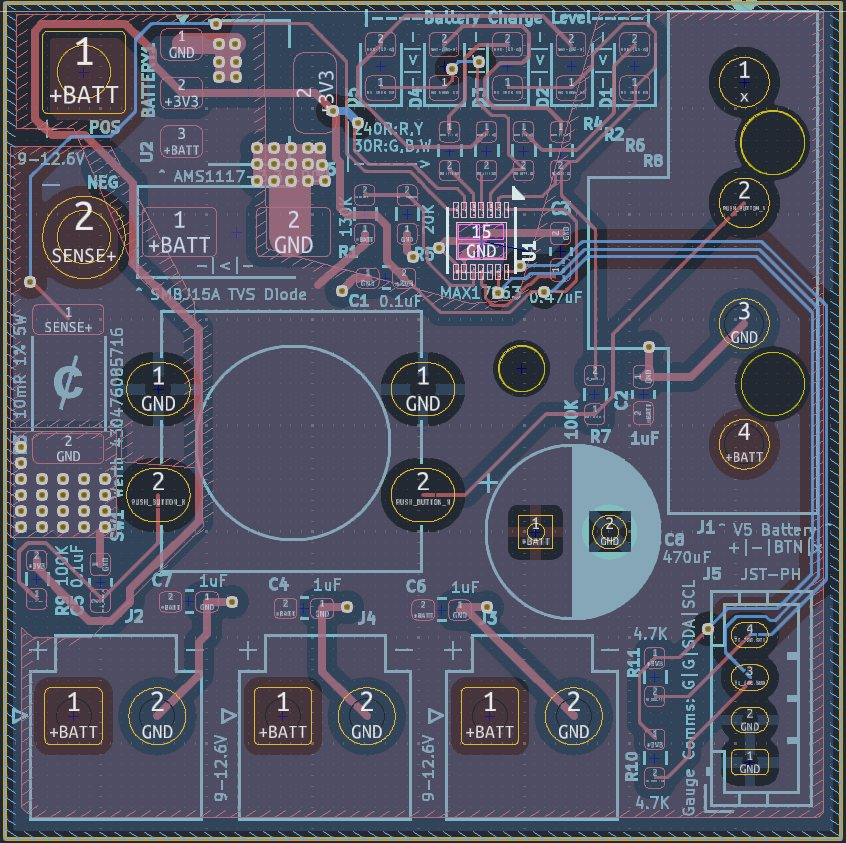
Getting around the field
Navigation runs on ROS 2. AMCL fuses the two LiDARs, the IMU and wheel odometry to keep track of where the robot is. Nav2's MPPI controller plans and follows paths. Higher-level moves, like picking up a block while driving, are written as behaviour trees in BehaviorTree.CPP. To pick up a block, a small controller centres the nearest detection in the front camera and drives into it.
We tested in Gazebo before the real field. With about 70 blocks on the field the simulation slowed to 3.4% of real time, so we simplified the meshes, turned the blocks into spheres and raised the time step. Gazebo can't simulate rolling friction, so we wrote a plugin for it.
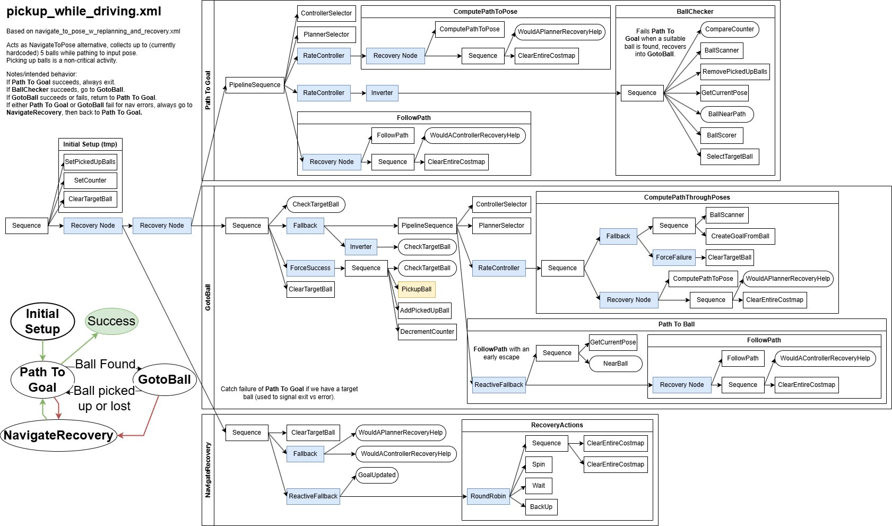
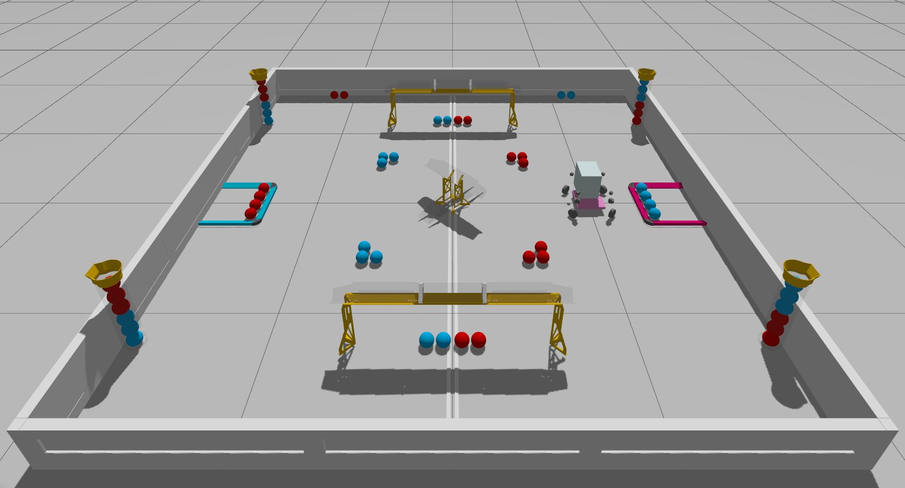
Seeing the field
Getting four cameras into the Orin took several tries. A depth camera had too narrow a view, four USB cameras overloaded the Orin's shared USB controller, and a four-camera board needed a connector the Orin doesn't have. In the end a Jetson Nano reads all four cameras, corrects the lighting, stitches the frames into one 2560 by 400 image and streams it to the Orin over Ethernet.
Gym lighting is uneven, so before detection each frame goes through a Retinex-style correction in OpenCV: estimate the lighting from a blurred, shrunk copy of the image, divide it out, and bring the brightness to a fixed level. YOLOv11 then finds blocks at about 30 Hz. To turn a detection into a position on the field, each camera's image is projected onto the floor, and a small neural network trained per camera corrects what's left of the error.
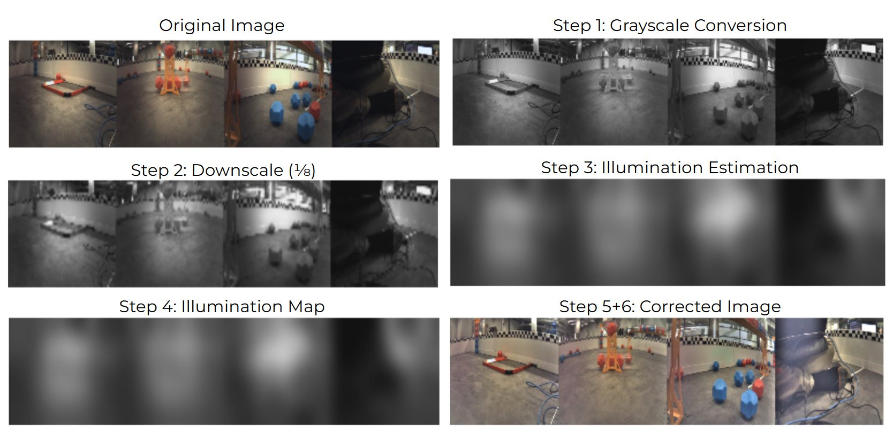
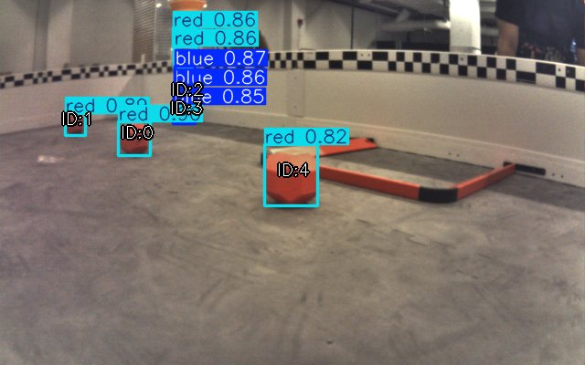
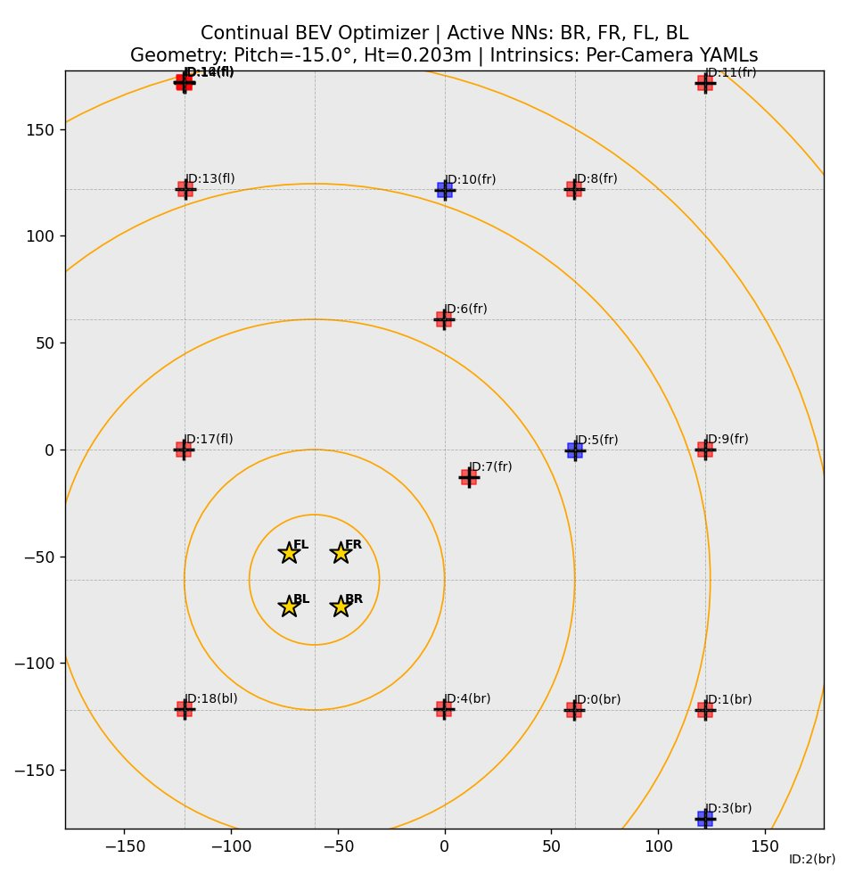
A model of the whole field
We also trained one model that looks at all four cameras together and predicts what is in every part of the field, including blocks already in goals. The field is split into a 48 by 48 grid of 3 inch cells. A shared ResNet18 turns each camera image into features, and a Transformer lets each grid cell look at the parts of the camera images that could contain it.
We trained it on 200,000 synthetic images rendered in Blender from the field CAD, with 25 different lighting setups, generated on eight GPUs in 16 hours. Plain attention would not train, because almost every cell is empty. Deformable attention, which only looks near where each cell should appear in each camera, fixed it. A second version predicts the exact position of all 88 blocks, with a median error under 1.5 cm.
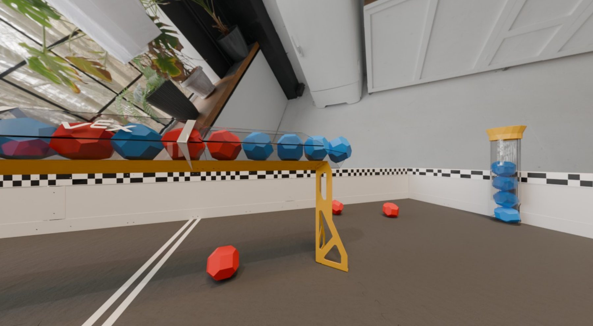
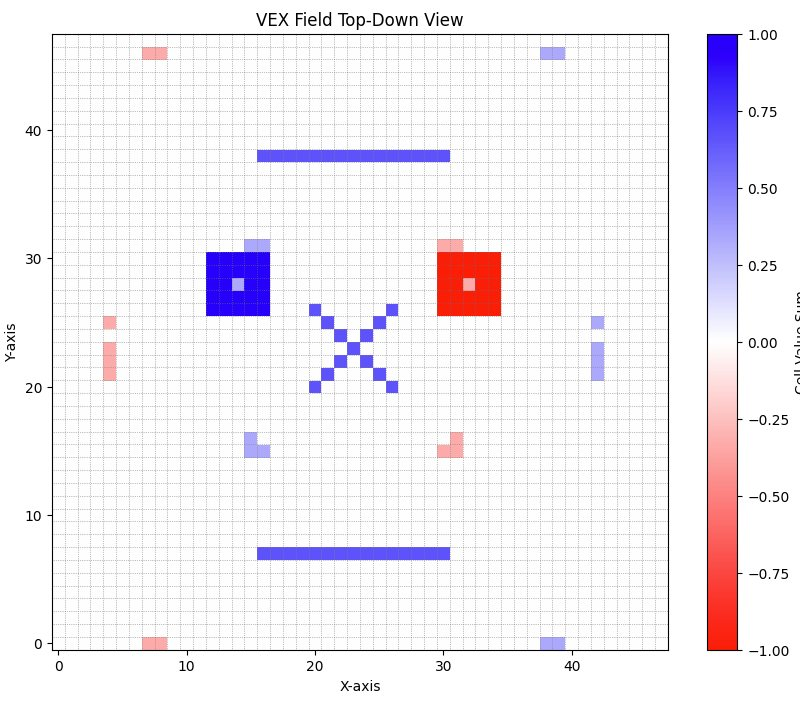
Deciding what to do
The strategy agent learned by playing against itself. We went through three versions. The first saw the field as a grid and trained with PPO, but 92,000 steps took a full day. The second added league play, where 20% of games are against older copies of itself, and rated every version with TrueSkill. The third moved to a faster continuous simulation in PyMunk, where the agent picks a target spot and heading every 200 milliseconds.
The final agent trained for eight days, over 26 million games, on 102 CPU cores and one GPU, and settled at a TrueSkill rating of about 160.
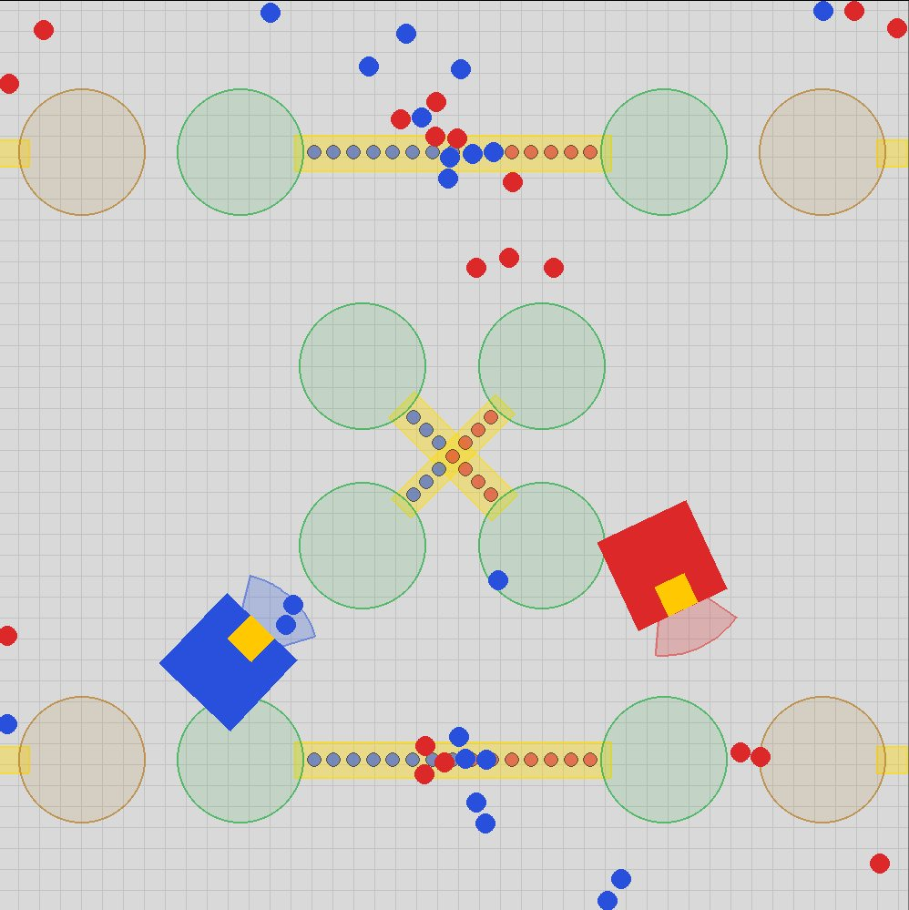
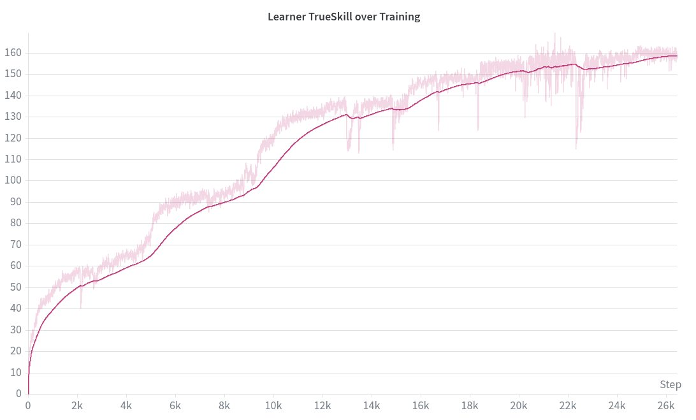
What didn't work
The report lists what didn't work. Every Comms Board we built burned out its RS-485 chips, probably because it had no protection diodes. We never had all the cameras connected to the main computer at once. The whole-field model runs at only 2 frames per second and has only seen synthetic data. The strategy agent was never run on the real robot. Those are the next steps for whoever picks this up.